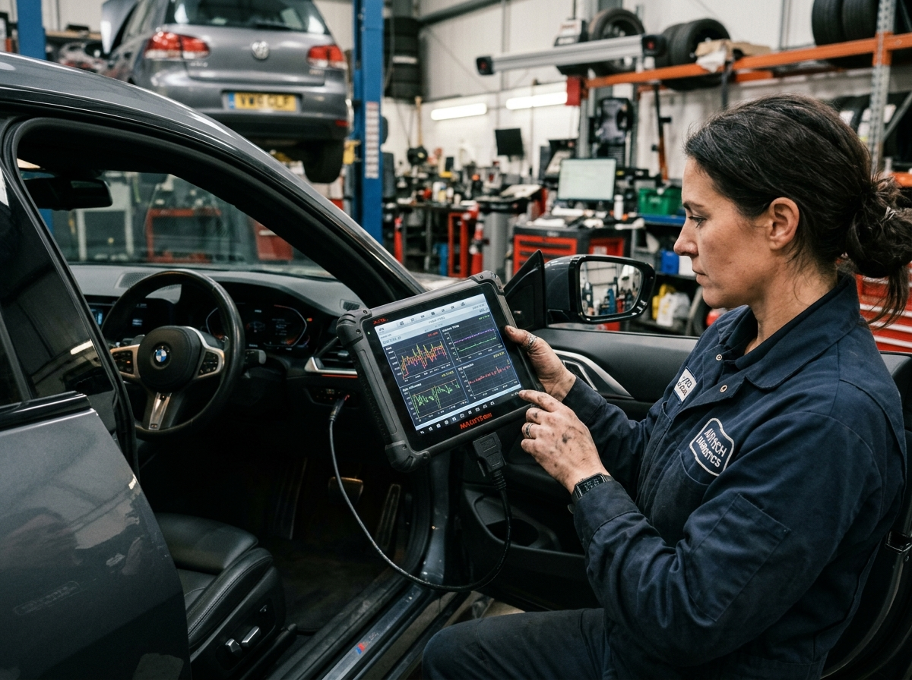
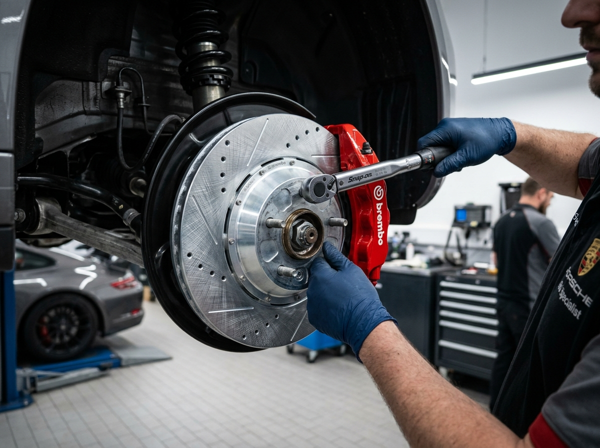
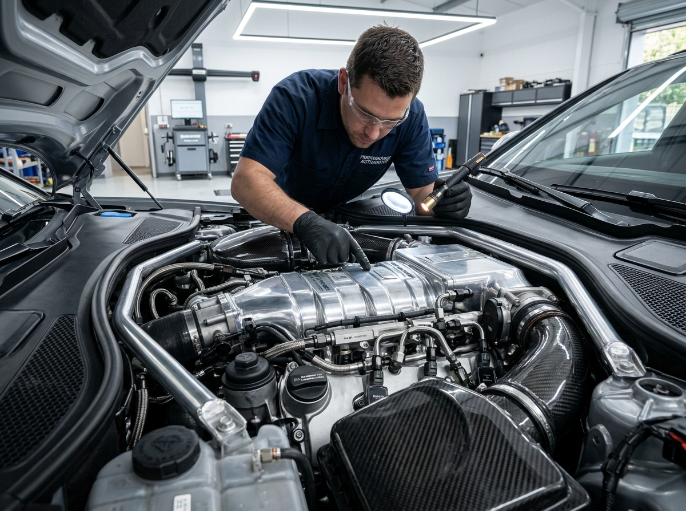
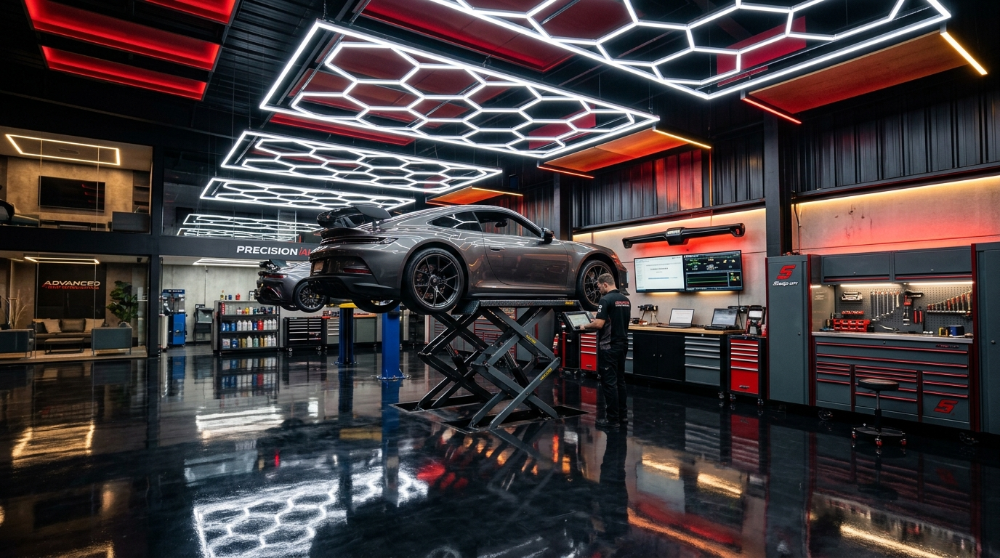

Diagnóstico de precisão e cuidado de mestre para o seu carro.
Especialistas em injeção eletrônica, scanner computadorizado, freios ABS e suspensão. Transparência de verdade, orçamento detalhado e peças de primeira linha para sua segurança rodar sem surpresas.
Garantia & ProcedênciaPeças originais e laudo técnico
Conheça a Checkpoint Auto
Compromisso com quem depende do carro todos os dias.
Na Checkpoint Auto, nossa equipe especializada acredita que manutenção automotiva não é só trocar peças — é diagnosticar com precisão milimétrica para que você nunca pague por reparos desnecessários.
Nossa oficina em Osasco - SP conta com tecnologia de ponta em scanners automotivos, bancada de teste para bicos injetores e ferramental de precisão para atender desde veículos populares até modelos de alta performance.
Diagnóstico Honesto
Explicamos visualmente o problema do seu carro antes de emitir qualquer orçamento.
Pontualidade na Entrega
Respeitamos seu tempo e seu planejamento diário com prazos cumpridos à risca.
Sem letra miúda, sem trocar peças boas. Você acompanha cada etapa pelo WhatsApp.
01
Recepção & Escuta
Você conversa direto com quem entende. Ouvem-se os sintomas, ruídos e histórico do carro.
02
Diagnóstico Técnico
Conexão com scanner computadorizado e inspeção visual detalhada nos componentes.
03
Orçamento Pré-aprovado
Enviamos fotos, vídeos e orçamento detalhado no WhatsApp antes de encostar qualquer chave.
04
Execução Especializada
Utilização de peças de 1ª linha recomendadas e torque conforme especificações do fabricante.
05
Teste & Entrega Limpa
Teste de rodagem e entrega do veículo revisado com laudo técnico e garantia do serviço.
Nossa Estrutura
Tecnologia, organização e precisão mecânica
Um espaço limpo e equipado para receber você e seu automóvel com o respeito que merecem.

Tecnologia
Telemetria & Diagnóstico Computadorizado

Segurança
Freios ABS, Discos e Pastilhas Cerâmicas

Performance
Injeção Direta e Ajuste Fino de Motores

Estrutura
Elevadores e Ferramental de Precisão
Agilidade no Atendimento
Simulador Rápido de Orçamento
Selecione o serviço do seu interesse e gere um chamado pronto para envio no WhatsApp da oficina.
Depoimentos
O que diz quem confia na Checkpoint Auto
Clientes satisfeitos com a honestidade e qualidade técnica da Checkpoint Auto.
★★★★★
"Excelente mecânica em Osasco! A equipe colocou o scanner na minha frente, me explicou exatamente qual bico estava falhando e resolveu em poucas horas. Preço muito honesto."
MS
Marcelo Santos
Proprietário de VW Nivus TSI
★★★★★
"Fiz a revisão de freios e suspensão antes de viajar com a família para o litoral. O carro voltou firme, sem nenhum barulho e com laudo de tudo o que foi trocado. Recomendo de olhos fechados!"
FA
Fernando Almeida
Proprietário de Jeep Compass
★★★★★
"Difícil encontrar oficina que cumpra prazo e seja tão transparente. A equipe é pontual, educada e manja muito de motores modernos. Minha oficina de confiança permanente."
CL
Camila Linhares
Proprietária de Toyota Yaris
Localização & Contato
Venha tomar um café e conferir seu carro
Atendimento ágil para motoristas de Osasco e toda a Grande São Paulo.